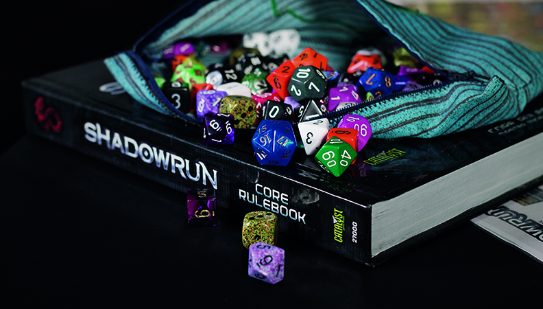

DUNGEONS & DICE
You are with your friends. In front of you are dice and papers. The person at the end of the table smiles. ”You find yourself in a tavern on a stormy night.”
What I described above is a very classic way for a session of an tabletop role-playing to start, but you might be wondering “What even is this whole role-playing thing?” History of role-playing games begun from wargaming, miniature armies fighting against each other. As Dave Arneson, one of the hobby creators himself said “Well, that kind of got us all thinking about "wasn’t that neat" and we did a couple of other games with various people. "Let’s have a big medieval campaign with half a dozen different people playing and then you’re the king or the knight, or whatever.” Most agree that one of the first steps came when Gary Gygax and his friends created the game “Chainmail” in the late 60s. From this humble game, Gygax and Arneson went on to create the first edition of “Dungeons & Dragons”, one of the most popular and well-known tabletop role-playing games, in the early 70s.
Role-playing games are a mix of improvised theatre, social interaction with people, and story-telling with help of game mechanics. In most role-playing games, you have the players and the Game Master or GM, who is the referee and the story-teller. They keep the rules in check and play the other characters in the story from friends to enemies. Players are the actors, they create their characters and are thrust into the story imagined by the GM. It could be as simple as “save the princess” or complicated as “political spy game.” In the end, it all depends on the imagination of the group.
“You find yourself in a tavern on a stormy night…”
The playing itself is similar in most role-playing games. The players are given a scene by the GM. For example, the party meeting a stranger in a tavern. The players then announce their actions and the scene is played out. Players are rewarded for playing according to their characters nature and motivations. An expert thief could be suspicious of mysterious stranger while group’s holy knight would be eager to help the stranger. The GM then uses the game’s mechanics to resolve the scene. If the thief suddenly decides to pickpocket the stranger, the GM will for example ask them, depending on the game system, to roll a die for success. This is where the math comes in. In this example, difficulty of stealing is 8. This means, the thief needs 8 or more on dice to succeed, but when rolling dice, he gets bonus from his thieving skill. The dice are then rolled with bonuses and minuses added to the roll. Depending on either success or failure, the GM narrates what happens in the story. The dice have been critical part of role-playing games for years and have become a symbol for the hobby. In recent years, more games have been trying out mechanics without dice and with more emphasis on the role-playing instead of dice rolling and character statistics. In fact, there are indie published role-playing games with no Game Masters. One example being Fiasco where everyone is the story-teller and players work together to make a story with their created characters and scenarios. These stories usually end up quite badly for them, which is part of the dark comedy and tragedy theme of the game.
Role-playing games have many different themes and genres in them. The most famous series “Dungeons & Dragons” has a fantasy theme, inspired by Tolkien’s stories and medieval combat. The classic style of D&D was for long, sneaking into dungeons and stealing treasure from its monsters. Stories slowly became bigger part of the game, as the players grew up and the game grew with them. Fantasy isn’t the only genre, but it is one of the more well-liked ones. There are game systems for running modern day games, sci-fi games, games inspired by movies like Star Wars and plenty of more. In today’s market, many indie studios are publishing their own role-playing games like Monsterhearts. Monsterhearts as the tagline says "the messy lives of teenage monsters" is a game which turns the everyday teenage angst of growing up and dealing with hormones into literally becoming a monster. This is one of the newer styles of story based role-playing games like Fiasco, where players and their stories are the most important thing. Today you can find plenty of celebrities enjoying role-playing as well. Some celebrities like Wil Wheaton of Star Trek Next Generation fame is known for hosting board games in his own internet show Tabletop and there are plenty of different podcasts and web shows like “Critical Role” where famous voice actors play Dungeons & Dragons campaign for people’s and their own entertainment. Role-playing games are now bigger than ever, but for some, the barrier to entry still seems a bit steep. All you need is some paper, some dice and a group of friends. Plenty of publishers like Wizards of The Coast are releasing starting sets of their games free so people can get into the hobby. Some like Paizo of Pathfinder are selling more affordable and simpler “Beginner Box” for interested people that show and teach them how to play. Some even offer simple stories to teach new GMs how to run the game and give them helpful tips and hints.
The greatest strength of role-playing is its ability to help people grow and empathize with each other. It allows us to make wonderful stories and try out things we could only dream about. It lets us create wonderful, horrifying and amazing worlds and fill them with characters that tell stories, just like our ancestors did. Despite plenty of negative and misaimed press in the 80’s, role-playing has been found excellent way to treat traumas, depression and loneliness. It’s empowering to those who feel rejected and powerless. I personally know people who find role-playing to be a power that helps them cope when life deals them a bad hand. I know writers and artists who feel inspired by role-playing. What was geeky then, is starting to become pop-culture now. After all, who of us have not dreamed of being a brave knight? Charismatic vocalist? Wise-cracking pilot? Sneaky spy? Daring thief? Or an angsty monster teenager?